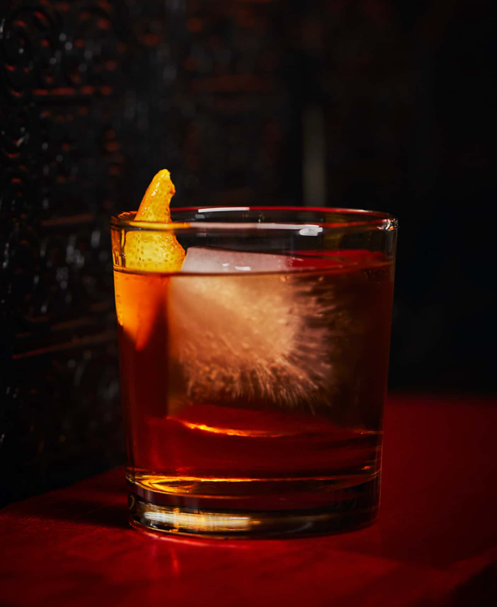

Old Fashioned
Ingredients
- 2 oz bourbon or rye whiskey
- 1/2 oz simple syrup
- 2-4 dashes Angostura bitters
- Orange twist for garnish
- Maraschino cherry (optional)
- Ice
Instructions
- In an Old Fashioned glass, add bitters and simple syrup.
- Add whiskey and a large ice cube.
- Stir gently to combine.
- Garnish with an orange twist and a cherry.
Variations
- Smoked Old Fashioned: Add a smoky flair by torching wood chips.
- Maple Old Fashioned: Replace simple syrup with maple syrup for a sweet twist.
- Spiced Old Fashioned: Infuse whiskey with cinnamon or clove.
History
The Old Fashioned is one of the oldest known cocktails, with roots tracing back to around 1806. It was originally just known as a combination of sugar, citrus, and spirits.
The name 'Old Fashioned' became popular in the 19th century as bartenders started creating more elaborate cocktails. Customers requested their drinks to be made in the 'old-fashioned' style, leading to the name we use today.